Selective Regional Adaptive Sampling: Exploring Region Scoring Methods Efficient Diffusion Sampling
Introduction
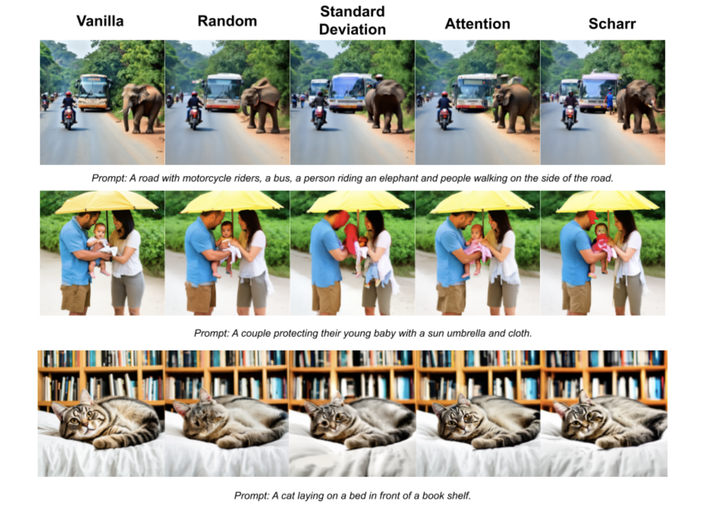Although diffusion models have become prominent in text-to-image generation, they are slow and computationally expensive to run inference with. The denoising process relies on iterative forward passes, where each pass requires attention operations that involve heavy computation across all text and image tokens. This project investigates how different region selection methods influence RAS, a novel diffusion sampling strategy that improves sampling efficiency by updating only a subset of spatial tokens at each step [1]. In the original RAS method, these regions are selected using predicted-noise standard deviation as a scoring heuristic. We explore alternative region-scoring metrics, such as attention-based and edge-based methods, which we believe may better capture semantic importance or fine-grained structure by incorporating more information from attention weights or neighboring tokens.
We demonstrate that standard deviation is a brittle scoring metric for the RAS method, particularly at low sampling ratios and on realistic, multi-object prompts, often failing to prioritize semantically meaningful regions. We evaluate how these metrics influence token-selection behavior and generation quality. While quantitative results across metrics are similar, our human study indicates that attention-based scoring produces more promising results for semantically coherent and human-preferred images in low-sampling regimes and realistic image prompts.
Relevant Work
Stable Diffusion 3
The noisy latent image is first patchified into image tokens, and the text prompt is made into text tokens. Then, the Multimodal Diffusion Transformer (MMDiT) processes them simultaneously through transformer blocks, with a separate set of weights used for processing each modality. Within each MMDiT block, the joint attention mechanism allows information to flow between image and text tokens within the same attention layers. This enables SD3 to generate images that closely represent the prompt, and hone visual details like backgrounds and lettering [2].
RAS
Region-Adaptive Sampling (RAS) is a novel, training-free method for accelerating sampling for Diffusion Transformers (DiTs). Many previous sampling acceleration methods rely on reducing the number of overall sampling steps [2]. RAS employs a different approach, reducing computation within each step by updating only a subset of tokens. Because DiTs treat the latent as a sequence of independent tokens with learned positional embeddings, RAS is able to freely prune, reorder, or cache tokens during inference without violating architectural assumptions.
The authors observed that during the sampling process, DiTs exhibit:
- temporal continuity: regions receiving the strongest updates tend to remain important across adjacent steps.
- lower variance within channels in predicted noise tokens in foreground regions.
Building off these insights, RAS computes a score for each image patch at each sampling step based on the standard deviation of the model’s predicted noise. The lowest-std patches are selected as fast-update tokens and passed through the next DiT forward pass, while slow-update tokens are skipped for that step and simply reuse cached noise from the previous iteration. (See Fig. 1) After merging the updated and cached predictions, sampling proceeds normally. To prevent starving any region, RAS tracks drop counts to periodically bump up the scores of neglected patches and inserts occasional dense (full-token) steps to combat accumulated errors.

The paper reports that even with a sampling ratio of 0.50 (only 50% of the image patches get updated at each step), RAS produces images with comparable quality while achieving a 1.6x speed up compared to standard full sampling. However, there are some limitations.
- The std scoring metric may correlate with foreground structure, but it does not necessarily capture semantic importance.
- It scores each token independently and does not consider token-to-token relationships.
- Images with multiple foreground objects or heavy texture may have ambiguous noise patterns, making region selection less reliable.
This motivates our study to extend the RAS method to alternative scoring metrics.
Other Diffusion Sampling Acceleration Methods
Outside of RAS, there is substantial work on accelerating inference in diffusion models. Many approaches focus on speeding up the sampling process. Training-based methods such as progressive distillation [3] and rectified flow [4] reduce the number of denoising steps by either distilling a teacher model’s multi-step sampler into a few steps or by learning a deterministic ODE that maps noise directly to data. Non-training methods, including DPM-Solver [3] and DeepCache [4], accelerate sampling through improved numerical integration or by caching intermediate features for reuse across steps. However, these techniques typically treat all spatial regions uniformly during sampling and do not account for spatial variation in how different regions evolve.
Other approaches aim to reduce computation by modifying the token representation itself. Token merging [5], for example, combines semantically or structurally similar tokens to reduce the number of processed tokens. While effective at lowering computational cost, this merging can lead to information loss over the sampling trajectory.
RAS offers an alternative to these methods, given that it dynamically selects which regions to refine at each sampling step and preserves token representations across steps rather than merging or discarding them.
Methods
Data
We use the MS-COCO 2017 dataset [6], with a similar setup to the original paper. From this dataset, we selected 100 prompt–image pairs. Prompts were chosen according to two criteria: first, the baseline Stable Diffusion 3 model needed to produce reasonably high-quality images for the prompt to ensure meaningful comparisons across sampling methods, and second, the set of prompts should span a wide variety of scene types.
RAS Implementation
We build on the official RAS implementation for Stable Diffusion 3 by modifying the token scoring function used to select fast-update tokens. We evaluate two alternative scoring methods: attention-based and edge-based.
How RAS selects tokens
- At each selective sampling step, tokens are ranked by a scalar score.
- A user-defined parameter sampling_ratio determines what fraction of tokens receive updates.
- The original paper computes scores using the per-token standard deviation across channels of the predicted noise from the previous step.
Starvation Prevention
RAS also performs starvation prevention, where they combat against some tokens rarely or never updating. They do 3 things to accomplish this.
- drop_count weighted score function.
- RAS tracks how many times each token has been dropped and rescales score.
- 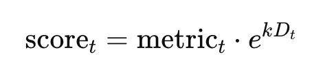
-
high_ratio exploration.
- Each step selects a mixture of top-scoring and low-scoring tokens. (high_ratio = 0.3 means 70% highest scoring + 30% lowest scoring tokens are selected.)
- error_reset_steps
- Specified sampling steps where all tokens are updated.
RAS settings used in experiments:
(best-performing settings reported in the paper)
- num_inference_steps = 28
- RAS sampling begins at step 4
- error_reset_steps = {12, 20}
- high_ratio = 0.30
Preliminary Experiments
Evaluating RAS-std at Low Sampling Ratios
As a baseline, we compare the original RAS scoring metric (predicted-noise std) against a random-token selection baseline at low sampling ratios (50%, 25%). Across several MS-COCO prompts, we visually inspect the outputs and observe that RAS-std often performs similarly to RAS-random. In multi-object or more realistic scenes, RAS-std is often worse, producing blurred or unstable foreground objects. These results suggest that std is a weak proxy for semantic importance, motivating alternative scoring functions.
Inspecting Attention Maps in SD3
We visualize attention maps from several SD3 transformer blocks to understand whether attention patterns correspond to semantically important regions. We observe that some blocks (especially early-mid layers, 6-10) highlight consistent semantic regions such as faces, animals, and main objects, while others emphasize primarily structural edges. This suggests that attention may provide a stronger, more semantically grounded scoring signal than std. These insights inform our choice of attention blocks for our custom scoring method.
See Appendix for visual examples.
Our Custom Scoring Methods
Attention-Based Scoring
Transformer attention reveals which tokens are most influential when predicting noise. We hypothesize that tokens that many other tokens attend to correspond to semantically important regions and are a good proxy for what tokens in the image should be updated more frequently.
SD3 uses joint attention, where each block performs self-attention over both image and text tokens, meaning noise latent tokens and prompt embeddings are concatenated before computing.
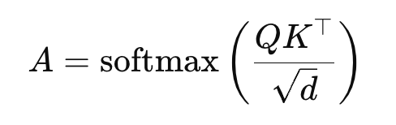where Q and K are the query and key projections of all tokens, and A has one row per query and one column per key.
We define an attention-based score for each image token as the column-wise sum of the attention matrix over all query tokens. For each image token j:
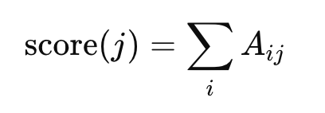We aggregate this score across heads and selected attention blocks.
We explore 4 RAS-attn variants, including block groups: {6,7,8} vs. {8,9,10} and high_ratio: 0.30 vs. 0.10. Different transformer blocks are known to specialize in different aspects of the representation (e.g., global layout vs. fine detail), which is supported by our preliminary study. We also hypothesize that attention provides a sharper signal, and thus a smaller exploration term might be needed for optimal performance.
Note: our attention-based metric introduces a modest computational overhead. SD3 often uses FlashAttention, which bypasses explicitly calculating the full attention matrix at once for efficient GPU computation. However, to obtain attention scores, we must calculate the full attention matrix A for selected blocks at RAS steps.
In RAS, only fast-update tokens produce new Q, K, V, while slow-update keys/values come from the cache. Thus, for RAS, the key tokens include both image tokens and text tokens, and the query tokens include only the fast-update image tokens plus text tokens. Thus, for a given step, A has shape ((sampling_ratio*N)+P)×(N+P), where N is the number of image tokens and P is the number of text tokens.
Edge-Based Scoring
We additionally explored an edge-based scoring metric using Sobel and Scharr filters. These kernels estimate local spatial gradients, so they highlight regions where image intensity changes sharply. By incorporating gradient information, RAS can use not only per-token metrics but also structural cues from nearby tokens. Given that edges typically correspond to semantically meaningful structures, an edge-based scoring method might more effectively allow RAS to choose the best regions to focus on.
In our edge-based scoring method, we apply standard edge-detection filters to each channel of the feature map and compute the L2 norm across channels to obtain a single scalar score per token. After patchifying the image, we rank patches according to this score in descending order. We experimented with both Sobel and Scharr filters, and found that Scharr produced better results, likely due to its improved rotational symmetry and more accurate gradient estimation.
Quantitative Evaluation of Results
We used CLIP (Contrastive Language-Image Pre-training), LPIPS (Learned Perceptual Image Patch Similarity), and LAION-AI’s Aesthetic Predictor V1 to evaluate the quality of our generated images. All of our quantitative measures were run with NVIDIA A100 80GB GPU.
CLIP Score: “On a scale of 0-1, how well did our output match the prompt?”
- Measures how well a generated image matches its prompt, where a higher score means better alignment [9]. We used a ViT-B/32 Transformer architecture, which was jointly trained with an image encoder and text encoder to measure the cosine similarity between image and text embeddings, optimizing for image-text pairs that contextually fit each other best.
LPIPS: “On a scale of 0-1, how much is our output visually different from Stable Diffusion’s output?”
- Uses deep networks to measure the perceptual similarity between two images, where a lower score means higher similarity. Cosine distance is used to compute the score [10]. We compared our RAS variants against Stable Diffusion 3.
- “Perceptual similarity” means “how similar two things are based on human judgment,” rather than making a purely statistical comparison like PSNR (Peak Signal-to-Noise Ratio) and SSIM (Structural Similarity Index Measure) [10].
LAION-AI Aesthetic Predictor: “On a scale of 0-10, how aesthetically pleasing is our output?”
- Uses a model trained on CLIP embeddings to rank an image on perceived aesthetic quality, where a higher score insinuates that it is more aesthetically pleasing. It was trained on 4000 samples that were annoted on a scale of 0 to 10 [11].
Human Study Design
To qualitatively compare the scoring methods, we conducted a human study in which participants viewed two images generated using either vanilla SD3, standard deviation, random selection, attention weights, or Scharr edge detection. We asked users to select the image that best matched the given MS-COCO prompt and was more visually appealing overall. Participants could choose “Image 1”, “Image 2”, or “Both images are about the same”. The metric used to generate each image was hidden and the order of questions were randomized to minimize bias.
We evaluated each pair of scoring methods using three unique prompts, yielding 30 total comparisons. These comparisons were drawn from a pool of 16 prompts in total; some prompts appeared in more than one method pair, but no prompt was reused within a single pair. We selected image–prompt pairs from MS-COCO 2017 to ensure coverage of diverse scene types, including objects, animals, and human activities.Because a few method pairs were missing in the initial survey, the study was run in two parts. The first part received responses from 91 participants, and the second from 32 participants.
We compute a weighted preference score for each method. For each prompt and method pair, we count the number of votes for each method and assign a weight of 1 to a direct preference and 0.5 to a neutral (“about the same”) response. The weighted total is then divided by the number of responses for that question to obtain a normalized score.
4. Results
4.1. Quantitative image quality comparison
Our best attention variants performed similarly to its other variants for CLIP and LAION, while doing slightly worse for LPIPS.
Our quantitative results were guided by two questions:
- Which attention RAS variant performed the best?
- How well did our best attention variant perform against the random, standard deviation, and edge-detection (Scharr) variants?
4.1.1. All RAS variants + SD3
Across our three scores (CLIP, LPIPS, LAION), our chosen attention variants were not that significantly different from their competitors. In fact, all of our variants weren’t significantly different from each other!
For each of the three scores, we picked our best attention-based contender (explained in 4.1.2.) and compared it against “Vanilla” SD3, Random, Standard Deviation, and Scharr (with the exception of LPIPS, which didn’t include SD3). Both of our notable differences came from the average LPIPS scores. For both sampling ratios, Standard Deviation and Scharr had higher average scores than Random and Attention. In general, all four variants had higher LPIPS scores when they used a sampling ratio of 25%, just like what we saw among the attention variants.

4.1.2. Best-performing attention RAS variants
For each score, our attention variants didn’t have significantly different results from each other. However, we noticed that variants that used Blocks 6-8 had higher average scores than variants that used Blocks 8-10. Also, variants that used a sampling ratio of 25% noticeably had higher LPIPS scores than variants with 50% sampling ratio, by a difference of ~0.05 on average.
Our winners for each evaluation, by average score:
- CLIP: Attn Blocks 6-8, sr = 25, hr=30
- LPIPS: Attn Blocks 6-8, sr = 25, hr=10
- LAION: Attn Blocks 6-8, sr = 50, hr=10
4.2. Qualitative Results
4.2.1. Human Results

Taking the results from the human survey, we computed two sets of weighted preference scores. In the first grouping, where each RAS variant is compared directly against Vanilla SD3, Vanilla SD3 attains by far the highest score, indicating that none of the sparse sampling strategies surpass full-token sampling. This matches our expectations: when the model can sample all tokens, it has strictly more information than when it is restricted to specific regions. Among the RAS methods, Attention-based sampling degrades performance the least relative to Vanilla SD3, while Scharr and Random lie in the middle, and the standard deviation method performs worst. This ordering appears in Figure 6: with the exception of the second row, the standard deviation method tends to produce the least faithful and least visually pleasing outputs, while Attention and edge-based (Scharr) sampling most closely match the Vanilla SD3 generations.
In the second grouping, where scores are computed only from pairwise comparisons between different RAS strategies (excluding Vanilla SD3), Attention again emerges as the strongest method, suggesting that it better matches the textual prompt and produces more visually appealing images than the alternatives. Random performs almost on par with Scharr here, which we hypothesize is because Random sampling often yields visually appealing images, sometimes comparable to Scharr and close to Attention, but can also fail catastrophically on certain scenes. For example, in the second row of Figure 6, Random produces an image that diverges completely from the Vanilla SD3 reference, whereas Scharr remains closer. This suggests that in scenes where foreground and background are less cleanly separated, Random sampling is more likely to miss important regions, while edge-based Scharr sampling can still focus on salient structure. Conversely, Scharr performs worst in the third row, which we attribute to the fact that convolving with a fixed edge kernel can oversmooth or distort fine details, such as the zebra’s head.
Finally, we note that our overall goal is to generate high-quality images faster than vanilla SD3. The original RAS paper reports that the Standard Deviation strategy achieves a throughput 1.6× higher than Vanilla SD3. Our Attention method uses more memory, so in our setup it reaches a slightly lower speedup of 1.5×, while edge-based methods, which add an extra convolution, run at approximately the same speed as Vanilla SD3. Even so, we believe these variants are worth exploring further, given the preliminary evidence that they can improve image quality relative to the baseline.
5. Discussion
5.1 Key Takeaways
Our evaluations raise the question: is our attention-based scoring metric a promising alternative to the standard deviation metric used in RAS [1]?
Although our RAS variants (plus SD3) didn’t have CLIP/LPIPS/LAION scores that were notably different from each other, our results point to two observations. First, averaging across attention blocks 6-8 lead to better results than Blocks 8-10, and we hypothesize that blocks within the middle of the denoising process may contain more useful information that focuses on both holistic patterns and fine details in an image, whereas later blocks will contain more information about fine details. Second, LPIPS scores were generally higher for metrics that used a 25% sampling ratio of text-to-image tokens. This may be because the RAS model was able to allocate more of its computation towards image-related information, which may have allowed it to produce outputs that were more perceptually similar to SD3’s.
5.2 Limitations and Future Work
Even though CLIP score is widely used for measuring image-prompt alignment, and LPIPS is used for image-image similarity, it is worth exploring whether CLIP and LPIPS are sufficient for evaluating the visual quality of a generative image model. Because LPIPS requires a set of reference images to compare results against, the scores are biased and not standardized. Common metrics like FID (Frechet Inception Distance) experience a similar limitation. For a more thorough comparison of RAS variants, we would like to explore unbiased and sample-efficient evaluations, such as CMMD [12].
Although the human study provides interesting preliminary results, it has several limitations. First, the study only included 15 prompts, which restricts our ability to generalize preferences across the full diversity of MS-COCO. Specifically, practical limits on survey length prevented us from evaluating a larger prompt set. Second, the survey was conducted in two parts due to missing comparisons in the initial version, resulting in uneven participant counts. To mitigate this, we aggregated preferences on a per-comparison basis and normalized scores, but the discrepancy in sample sizes may still introduce additional variance. Third, although a randomized prompt selection would reduce potential selection bias, it would require a substantially larger prompt set than was practical for our survey design, as mentioned earlier. Given more time, we would aim to include more prompts and increase the number of comparisons between methods within each prompt.
References
- Z. Liu, Y. Yang, C. Zhang, Y. Zhang, L. Qiu, Y. You and Y. Yang, “Region-Adaptive Sampling for Diffusion Transformers,” arXiv preprint arXiv:2502.10389, 2025.
- P. Esser et al., “Scaling rectified flow transformers for high-resolution image synthesis,” in Proc. 41st Int. Conf. Mach. Learn. (ICML’24), Vienna, Austria, 2024, pp. 503–530.
- Chitwan Saharia, William Chan, Huiwen Chang, Chris Lee, Jonathan Ho, Tim Salimans, David Fleet, and Mohammad Norouzi. Palette: Image-to-image diffusion models. In ACM SIGGRAPH 2022 conference proceedings, pages 1–10, 2022.
- Michael S Albergo and Eric Vanden-Eijnden. Building normalizing flows with stochastic interpolants. arXiv preprint arXiv:2209.15571, 2022. 2023, pp. 4599–4608.
- Cheng Lu, Yuhao Zhou, Fan Bao, Jianfei Chen, Chongxuan Li, and Jun Zhu. Dpm-solver: A fast ode solver for diffusion probabilistic model sampling in around 10 steps. Advances in Neural Information Processing Systems, 35:5775–5787, 2022. 1, 4
- Mengwei Xu, Mengze Zhu, Yunxin Liu, Felix Xiaozhu Lin, and Xuanzhe Liu. Deepcache: Principled cache for mobile deep vision. In Proceedings of the 24th annual international conference on mobile computing and networking, pages 129–144, 2018.
- D. Bolya and J. Hoffman, “Token Merging for Fast Stable Diffusion,” in Proceedings of the IEEE/CVF Conference on Computer Vision and Pattern Recognition Workshops (CVPRW)
- Tsung-Yi Lin, Michael Maire, Serge Belongie, James Hays, Pietro Perona, Deva Ramanan, Piotr Dollar, and C Lawrence ´ Zitnick. Microsoft coco: Common objects in context. In Computer Vision–ECCV 2014: 13th European Conference, Zurich, Switzerland, September 6-12, 2014, Proceedings, Part V 13, pages 740–755. Springer, 2014.
- A. Radford, J. W. Kim, C. Hallacy, A. Ramesh, G. Goh, S. Agarwal, G. Sastry, A. Askell, P. Mishkin, J. Clark, G. Krueger and I. Sutskever, “Learning Transferable Visual Models From Natural Language Supervision,” arXiv preprint arXiv:2103.00020, 2021.
- R. Zhang, P. Isola, A. A. Efros, E. Shechtman and O. Wang, “The Unreasonable Effectiveness of Deep Features as a Perceptual Metric,” in Proc. 2018 IEEE/CVF Conf. Computer Vision and Pattern Recognition (CVPR), 2018, pp. 586–595.
- “LAION-AI/aesthetic-predictor,” GitHub repository, [Online]. Available: https://github.com/LAION-AI/aesthetic-predictor.
- S. Jayasumana, S. Ramalingam, A. Veit, D. Glasner, A. Chakrabarti, and S. Kumar, "Rethinking FID: Towards a better evaluation metric for image generation," arXiv preprint arXiv:2401.09603, 2024.
Appendix
Preliminary Experiment Figures
These are the attention maps of SD3, visualized across a few blocks of SD3's DiT and across sampling steps, for a generated image above.
The image above was generated by the prompt: "A road with motorcycle riders, a bus, a person riding an elephant and people walking on the side of the road."
Block 5
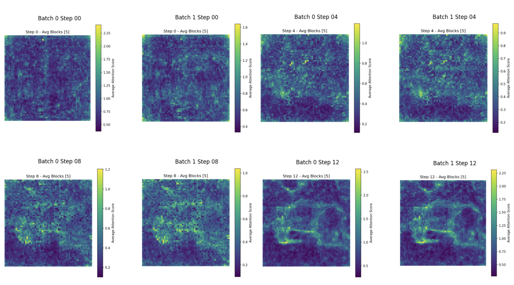 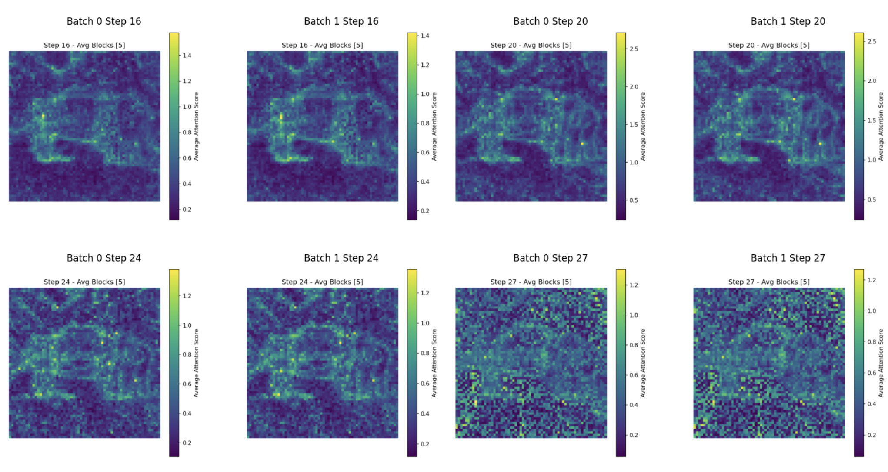Block 10
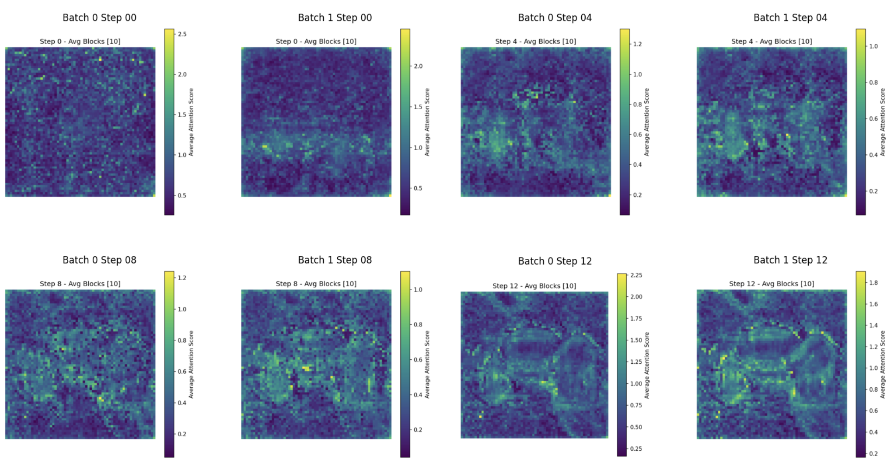 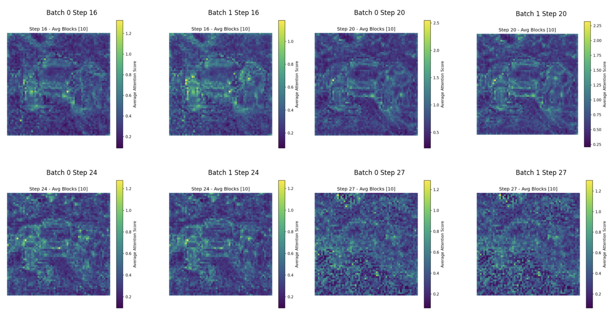Block 15
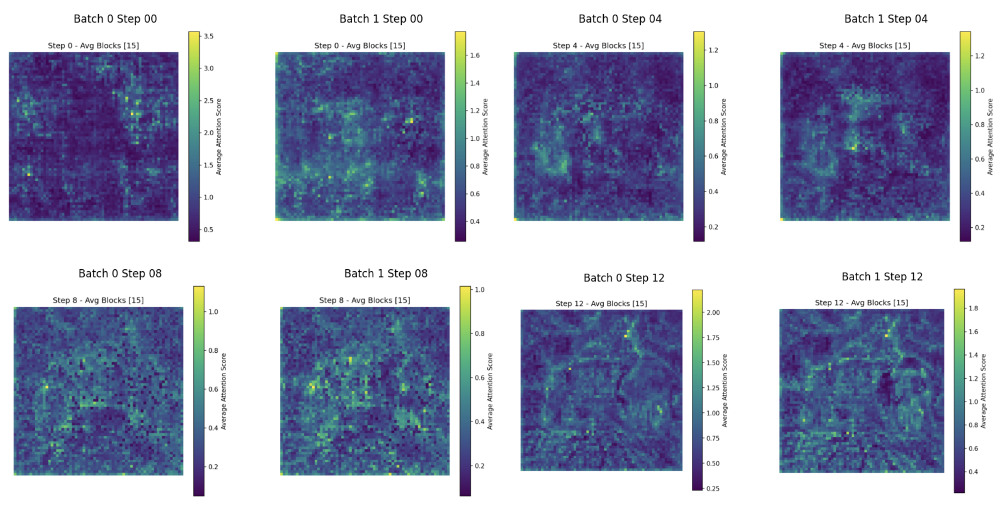 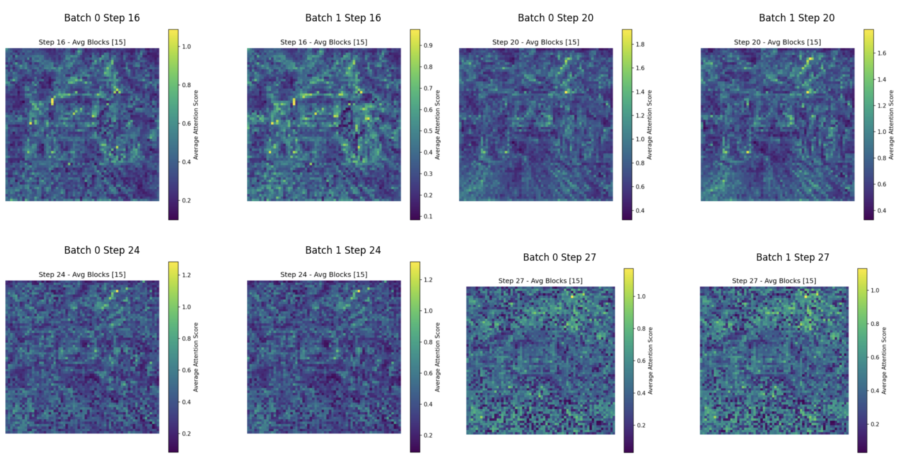Block 20
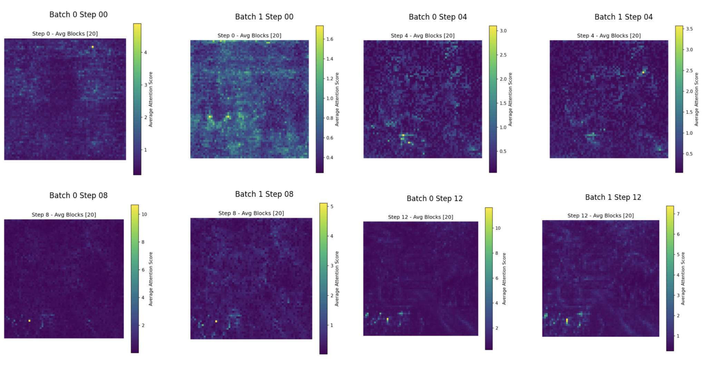 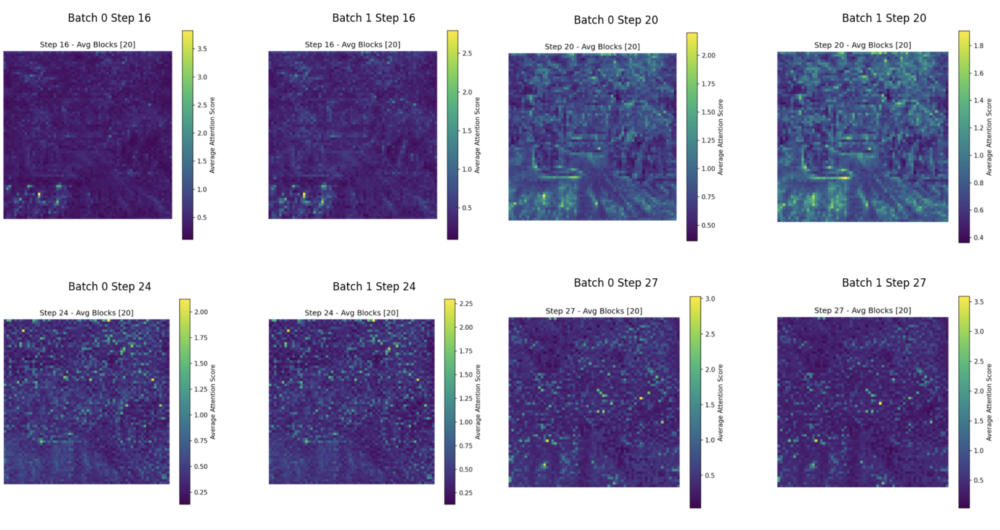Avged Across Blocks 8-10
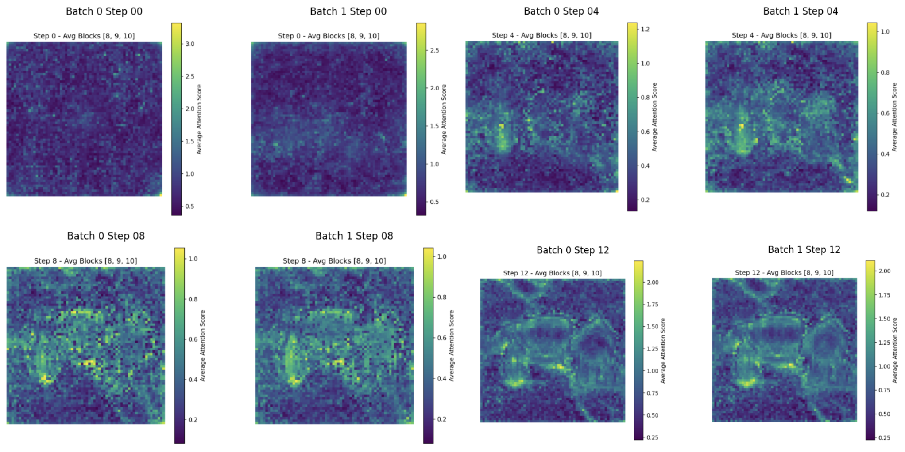 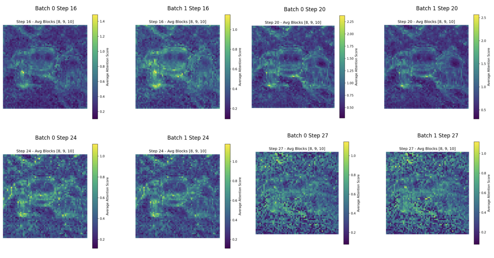